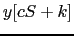
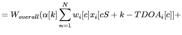
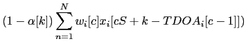
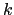
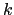

Next: Use of the Estimated Up: Output Signal Generation Previous: Automatic Adaptive Channel Elimination Contents
Once the output weight has been determined for each channel at a particular segment, all the signals are summed up to form the output ``enhanced'' signal. Such output signal needs to be ensured acoustic continuity at all times. In the theoretical filter&sum equation as shown in eq. 2.33 it will causes discontinuities in the signal on the segments edges due to the mismatch between the summed-up signals on the edges between segments.
A triangular window is therefore used to smooth and reduce the discontinuity between any two segments, as seen in figure 5.9. At every segment the triangular filter smooths the signal delayed using that segment's selected TDOA value with the signals delayed using the TDOA values from the previous segment. By using the triangular window the system obtains a constant total value without discontinuities. The actual implementation follows equation 5.19.
|  |  | |
|  | (5.19) |
where  is the segment sample length,
is the segment sample length,  is the
segment being processed and  is the sample within that segment
being processed.
is the
segment being processed and  is the sample within that segment
being processed.
In the standard implementation the analysis window overlaps 50% with the segment window, which agrees with the triangular overlap of 50% overlap done here. After all samples from both overlapping windows are summed the overall weighting factor computed earlier is applied to ensure that the dynamic range of the filter&summed signal is optimally matched with the available dynamic range of the output file. The resulting signal is further processed by the speaker diarization system which is described in the next chapter. Together with the acoustic signal, also the TDOA values used in the channel delays are written to an ASCII file for use by the Diarization system as features and used as explained in the next section.